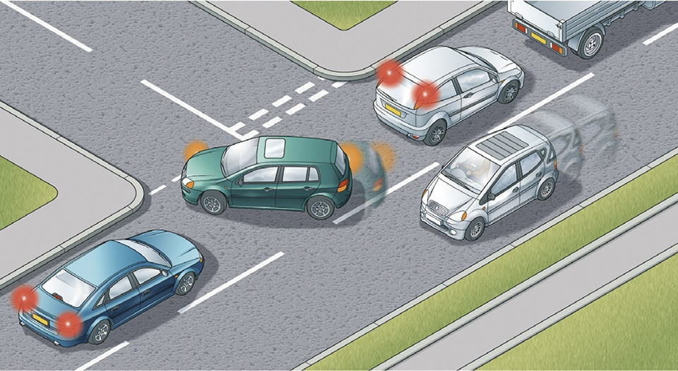
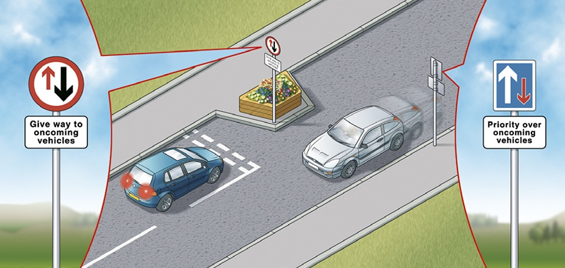

General rules, techniques and advice for all drivers and riders (103 to 158)
8. General advice (144 to 158)
144
You MUST NOT
Law RTA 1988 sects 2 & 3 as amended by RTA 1991
You MUST NOT
- drive dangerously
- drive without due care and attention
- drive without reasonable consideration for other road users.
Law RTA 1988 sects 2 & 3 as amended by RTA 1991
145
You MUST NOT drive on or over a pavement, footpath or bridleway except to gain lawful access to property, or in the case of an emergency.
Laws HA 1835 sect 72 & RTA 1988 sect 34
You MUST NOT drive on or over a pavement, footpath or bridleway except to gain lawful access to property, or in the case of an emergency.
Laws HA 1835 sect 72 & RTA 1988 sect 34
146
Adapt your driving to the appropriate type and condition of road you are on. In particular
Adapt your driving to the appropriate type and condition of road you are on. In particular
- do not treat speed limits as a target. It is often not appropriate or safe to drive at the maximum speed limit
- take the road and traffic conditions into account. Be prepared for unexpected or difficult situations, for example, the road being blocked beyond a blind bend. Be prepared to adjust your speed as a precaution
- where there are junctions, be prepared for road users emerging
- in side roads and country lanes look out for unmarked junctions where nobody has priority
- be prepared to stop at traffic control systems, road works, pedestrian crossings or traffic lights as necessary
- try to anticipate what pedestrians and cyclists might do. If pedestrians, particularly children, are looking the other way, they may step out into the road without seeing you.
147
Be considerate. Be careful of and considerate towards all types of road users, especially those requiring extra care (see Rule 204).
Be considerate. Be careful of and considerate towards all types of road users, especially those requiring extra care (see Rule 204).
- you MUST NOT throw anything out of a vehicle; for example, food or food packaging, cigarette ends, cans, paper or carrier bags. This can endanger other road users, particularly motorcyclists and cyclists.
- try to be understanding if other road users cause problems; they may be inexperienced or not know the area well.
- be patient; remember that anyone can make a mistake.
- do not allow yourself to become agitated or involved if someone is behaving badly on the road. This will only make the situation worse. Pull over, calm down and, when you feel relaxed, continue your journey.
- slow down and hold back if a road user pulls out into your path at a junction. Allow them to get clear. Do not over-react by driving too close behind to intimidate them.
148
Safe driving and riding needs concentration. Avoid distractions when driving or riding such as
You MUST NOT smoke in public transport vehicles or in vehicles used for work purposes in certain prescribed circumstances. Separate regulations apply to England, Wales and Scotland. In England and Wales, the driver MUST NOTsmoke or allow anyone to smoke in an enclosed private vehicle carrying someone under 18, including motor caravans. In Scotland it is an offence for anyone aged 18 or over to smoke in a private motor vehicle (unless it is parked and being used as living accommodation) when there is someone under 18 in the vehicle and the vehicle is in a public place.
Safe driving and riding needs concentration. Avoid distractions when driving or riding such as
- loud music (this may mask other sounds)
- trying to read maps
- inserting a cassette or CD or tuning a radio
- arguing with your passengers or other road users
- eating and drinking
- smoking
You MUST NOT smoke in public transport vehicles or in vehicles used for work purposes in certain prescribed circumstances. Separate regulations apply to England, Wales and Scotland. In England and Wales, the driver MUST NOTsmoke or allow anyone to smoke in an enclosed private vehicle carrying someone under 18, including motor caravans. In Scotland it is an offence for anyone aged 18 or over to smoke in a private motor vehicle (unless it is parked and being used as living accommodation) when there is someone under 18 in the vehicle and the vehicle is in a public place.
Mobile phones and in-vehicle technology
149
You MUST exercise proper control of your vehicle at all times. You MUST NOTuse a hand-held mobile phone, or similar device, capable of interactive communication (such as a tablet) for any purpose when driving or when supervising a learner driver. This ban covers all use of a hand-held interactive communication device and it applies even when the interactive communication capability is turned off or unavailable. You MUST NOT pick up the phone or similar device while driving to dial a number and then put it in the cradle for the duration of the conversation. You MUST NOT pick up and use your hand-held phone or similar device while stationary in traffic.
There is an exception to call 999 or 112 in a genuine emergency when it is unsafe or impractical to stop. There is also an exception if you are using a hand-held mobile phone or similar device to make a contactless payment at a contactless payment terminal. Your vehicle MUST be stationary, and the goods or services MUST be received at the same time as, or after, the contactless payment.
Never use a hand-held microphone when driving. Using hands-free equipment is also likely to distract your attention from the road. It is far safer not to use any telephone or similar device while you are driving or riding - find a safe place to stop first or use the voicemail facility and listen to messages later.
You may park your vehicle using a handheld remote control app or device. The app or device MUST be legal, and you should not put other people in danger when you use it.
You MUST exercise proper control of your vehicle at all times. You MUST NOTuse a hand-held mobile phone, or similar device, capable of interactive communication (such as a tablet) for any purpose when driving or when supervising a learner driver. This ban covers all use of a hand-held interactive communication device and it applies even when the interactive communication capability is turned off or unavailable. You MUST NOT pick up the phone or similar device while driving to dial a number and then put it in the cradle for the duration of the conversation. You MUST NOT pick up and use your hand-held phone or similar device while stationary in traffic.
There is an exception to call 999 or 112 in a genuine emergency when it is unsafe or impractical to stop. There is also an exception if you are using a hand-held mobile phone or similar device to make a contactless payment at a contactless payment terminal. Your vehicle MUST be stationary, and the goods or services MUST be received at the same time as, or after, the contactless payment.
Never use a hand-held microphone when driving. Using hands-free equipment is also likely to distract your attention from the road. It is far safer not to use any telephone or similar device while you are driving or riding - find a safe place to stop first or use the voicemail facility and listen to messages later.
You may park your vehicle using a handheld remote control app or device. The app or device MUST be legal, and you should not put other people in danger when you use it.
150
There is a danger of driver distraction being caused by in-vehicle systems such as satellite navigation systems, congestion warning systems, PCs, multi-media, etc. You MUST exercise proper control of your vehicle at all times. Do not rely on driver assistance systems such as cruise control or lane departure warnings. They are available to assist but you should not reduce your concentration levels. Do not be distracted by maps or screen-based information (such as navigation or vehicle management systems) while driving or riding. If necessary find a safe place to stop.
As the driver, you are still responsible for the vehicle if you use a driver assistance system (like motorway assist). This is also the case if you use a hand-held remote control parking app or device. You MUST have full control over these systems at all times.
There is a danger of driver distraction being caused by in-vehicle systems such as satellite navigation systems, congestion warning systems, PCs, multi-media, etc. You MUST exercise proper control of your vehicle at all times. Do not rely on driver assistance systems such as cruise control or lane departure warnings. They are available to assist but you should not reduce your concentration levels. Do not be distracted by maps or screen-based information (such as navigation or vehicle management systems) while driving or riding. If necessary find a safe place to stop.
As the driver, you are still responsible for the vehicle if you use a driver assistance system (like motorway assist). This is also the case if you use a hand-held remote control parking app or device. You MUST have full control over these systems at all times.
151
In slow-moving traffic. You should
In slow-moving traffic. You should
- reduce the distance between you and the vehicle ahead to maintain traffic flow
- never get so close to the vehicle in front that you cannot stop safely
- leave enough space to be able to manoeuvre if the vehicle in front breaks down or an emergency vehicle needs to get past
- not change lanes to the left to overtake
- allow access into and from side roads, as blocking these will add to congestion
- allow pedestrians and cyclists to cross in front of you
- be aware of cyclists and motorcyclists who may be passing on either side.

Rule 151: Do not block access to a side road
Driving in built-up areas
152
Residential streets. You should drive slowly and carefully on streets where there are likely to be pedestrians, cyclists and parked cars. In some areas a 20 mph (32 km/h) maximum speed limit may be in force. Look out for
Residential streets. You should drive slowly and carefully on streets where there are likely to be pedestrians, cyclists and parked cars. In some areas a 20 mph (32 km/h) maximum speed limit may be in force. Look out for
- vehicles emerging from junctions or driveways
- vehicles moving off
- car doors opening
- pedestrians
- children running out from between parked cars
- cyclists and motorcyclists.
153
Traffic-calming measures. On some roads there are features such as road humps, chicanes and narrowings which are intended to slow you down. When you approach these features reduce your speed. Allow cyclists and motorcyclists room to pass through them. Maintain a reduced speed along the whole of the stretch of road within the calming measures. Give way to oncoming road users if directed to do so by signs. You should not overtake other moving road users while in these areas.
Traffic-calming measures. On some roads there are features such as road humps, chicanes and narrowings which are intended to slow you down. When you approach these features reduce your speed. Allow cyclists and motorcyclists room to pass through them. Maintain a reduced speed along the whole of the stretch of road within the calming measures. Give way to oncoming road users if directed to do so by signs. You should not overtake other moving road users while in these areas.

Rule 153: Chicanes may be used to slow traffic down
Country roads
154
Take extra care on country roads and reduce your speed at approaches to bends, which can be sharper than they appear, and at junctions and turnings, which may be partially hidden. Be prepared for pedestrians, horse riders, cyclists, slow-moving farm vehicles or mud on the road surface. Make sure you can stop within the distance you can see to be clear. You should also reduce your speed where country roads enter villages.
Take extra care on country roads and reduce your speed at approaches to bends, which can be sharper than they appear, and at junctions and turnings, which may be partially hidden. Be prepared for pedestrians, horse riders, cyclists, slow-moving farm vehicles or mud on the road surface. Make sure you can stop within the distance you can see to be clear. You should also reduce your speed where country roads enter villages.
155
Single-track roads. These are only wide enough for one vehicle. They may have special passing places. If you see a vehicle coming towards you, or the driver behind wants to overtake, pull into a passing place on your left, or wait opposite a passing place on your right. Give way to vehicles coming uphill whenever you can. If necessary, reverse until you reach a passing place to let the other vehicle pass. Slow down when passing pedestrians, cyclists and horse riders.
Single-track roads. These are only wide enough for one vehicle. They may have special passing places. If you see a vehicle coming towards you, or the driver behind wants to overtake, pull into a passing place on your left, or wait opposite a passing place on your right. Give way to vehicles coming uphill whenever you can. If necessary, reverse until you reach a passing place to let the other vehicle pass. Slow down when passing pedestrians, cyclists and horse riders.
156
Do not park in passing places.
Do not park in passing places.
Vehicles prohibited from using roads and pavements
157
Certain motorised vehicles do not meet the construction and technical requirements for road vehicles and are generally not intended, not suitable and not legal for road, pavement, footpath, cycle path or bridleway use. These include most types of miniature motorcycles, also called mini motos, and motorised scooters, also called go peds, which are powered by electric or internal combustion engines. These types of vehicle MUST NOT be used on roads, pavements, footpaths or bridleways.
Laws RTA 1988 sects 34, 41a, 42, 47, 63 & 66, HA 1835, sect 72, & R(S)A sect 129
Certain motorised vehicles do not meet the construction and technical requirements for road vehicles and are generally not intended, not suitable and not legal for road, pavement, footpath, cycle path or bridleway use. These include most types of miniature motorcycles, also called mini motos, and motorised scooters, also called go peds, which are powered by electric or internal combustion engines. These types of vehicle MUST NOT be used on roads, pavements, footpaths or bridleways.
Laws RTA 1988 sects 34, 41a, 42, 47, 63 & 66, HA 1835, sect 72, & R(S)A sect 129
158
Certain models of motorcycles, motor tricycles and quadricycles, also called quad bikes, are suitable only for off-road use and do not meet legal standards for use on roads. Vehicles that do not meet these standards MUST NOT be used on roads. They MUST NOT be used on pavements, footpaths, cycle paths or bridleways either. You MUST make sure that any motorcycle, motor tricycle, quadricycle or any other motor vehicle meets legal standards and is properly registered, taxed and insured before using it on the roads. Even when registered, taxed and insured for the road, vehicles MUST NOT be used on pavements.
Laws RTA 1988 sects 34, 41a, 42, 47, 63, 66 & 156, HA 1835, sect 72, R(S)A sect 129, & VERA Ss 1, 29, 31A, & 43A
Certain models of motorcycles, motor tricycles and quadricycles, also called quad bikes, are suitable only for off-road use and do not meet legal standards for use on roads. Vehicles that do not meet these standards MUST NOT be used on roads. They MUST NOT be used on pavements, footpaths, cycle paths or bridleways either. You MUST make sure that any motorcycle, motor tricycle, quadricycle or any other motor vehicle meets legal standards and is properly registered, taxed and insured before using it on the roads. Even when registered, taxed and insured for the road, vehicles MUST NOT be used on pavements.
Laws RTA 1988 sects 34, 41a, 42, 47, 63, 66 & 156, HA 1835, sect 72, R(S)A sect 129, & VERA Ss 1, 29, 31A, & 43A